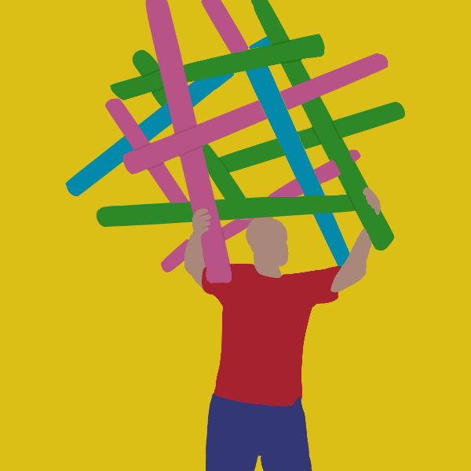

GOFAST (Gigantic Outdoor Floating Art Structure)

Inception
After working on my handheld tensegrity toy project for a little over a year, I decided it was time to kick things up a notch. A friend from NASA helped me build my first human-scale tensegrity using some interesting household materials.
Concept
A relatively large, elastic tensegrity, with at least one dimension approximately the same length as an adult human body.
Tools
|
Materials
|
Method
Below, you can see a time-lapse of our backyard build.